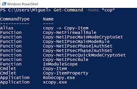

📌 ¿Qué es PowerShell?
PowerShell es una interfaz de línea de comandos y un lenguaje de scripting desarrollado por Microsoft. A diferencia del CMD clásico, PowerShell trabaja con objetos (no solo texto) y permite automatizar tareas administrativas complejas.
🔧 Comandos básicos (cmdlets)
$PSVersionTable.PSVersion– Muestra la versión de PowerShell.Get-Help– Ayuda integrada.Get-Process– Lista los procesos en ejecución.Get-Service– Muestra servicios del sistema.Get-Location– Directorio actual.Set-Location C:\– Cambia a la unidad C:.New-Item -Path "UMG" -ItemType Directory– Crea carpeta.Set-Content/Get-Content– Escribir/leer archivos.Remove-Item– Elimina archivos.
📌 Ejemplo práctico (propio)
En el laboratorio, creé un script pequeño para organizar mi escritorio:
Set-Location C:\Users\T310\Desktop
New-Item -Path "UMG" -ItemType Directory
cd UMG
New-Item -Path "NuevoArchivo.txt" -ItemType File
Set-Content NuevoArchivo.txt "Este es un archivo de texto creado con PowerShell."
$nombre = "Pedro"
$saludo = "Hola, " + $nombre
Write-Output $saludoTambién usé mkdir UMG2 y copié archivos de una carpeta a otra. Aprendí que con variables ($nombre) y concatenación puedo personalizar mensajes.
🖼️ Recurso multimedia

▶ Tutorial de Terminal / PowerShell
💭 Reflexión personal
¿Por qué elegí este tema? Porque me voló la cabeza poder crear archivos, leerlos y eliminarlos con solo 3 líneas. Además, las variables me recordaron a la programación básica.
¿Dónde se aplica? Administradores de sistemas, DevOps, ingenieros de soporte: todos usan PowerShell para automatizar tareas como crear usuarios en Active Directory, generar reportes o configurar servidores.